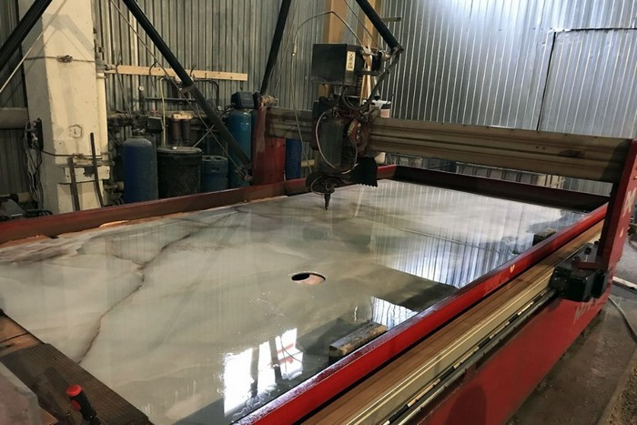
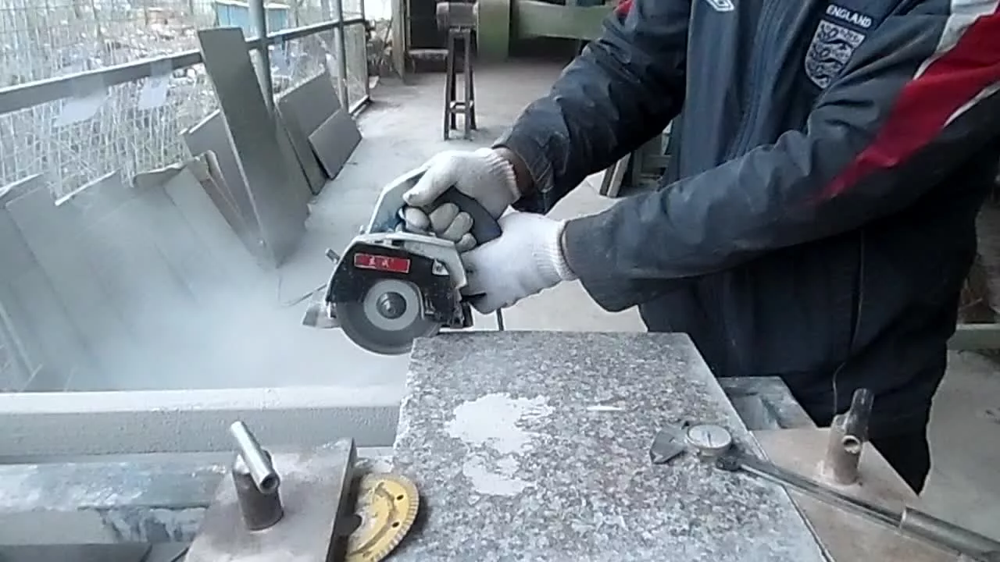
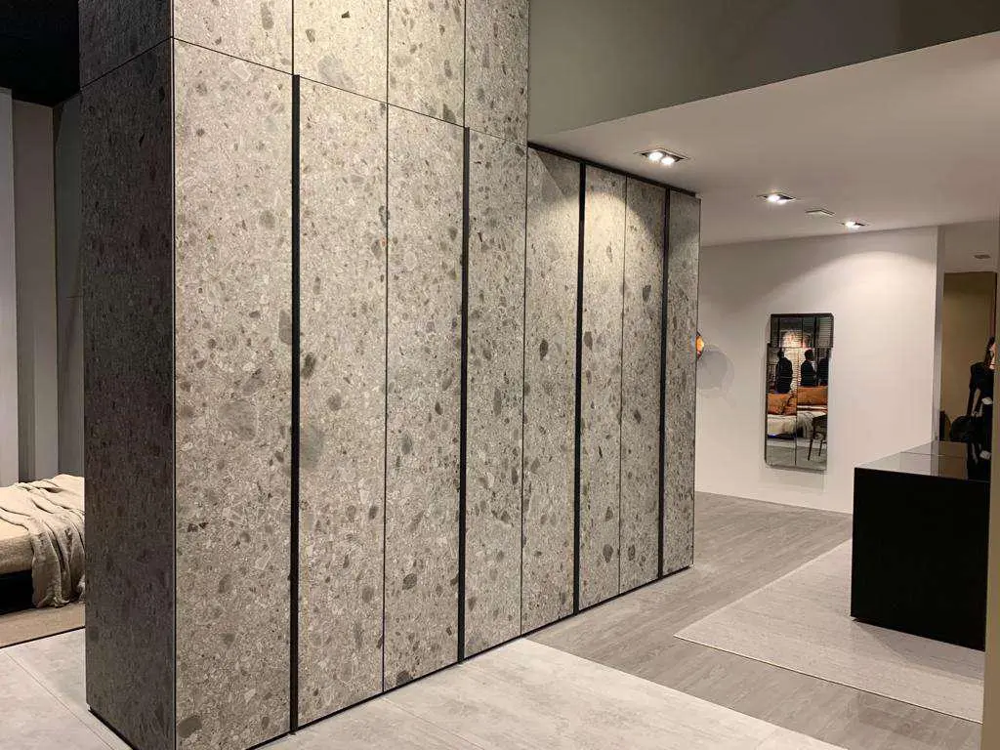
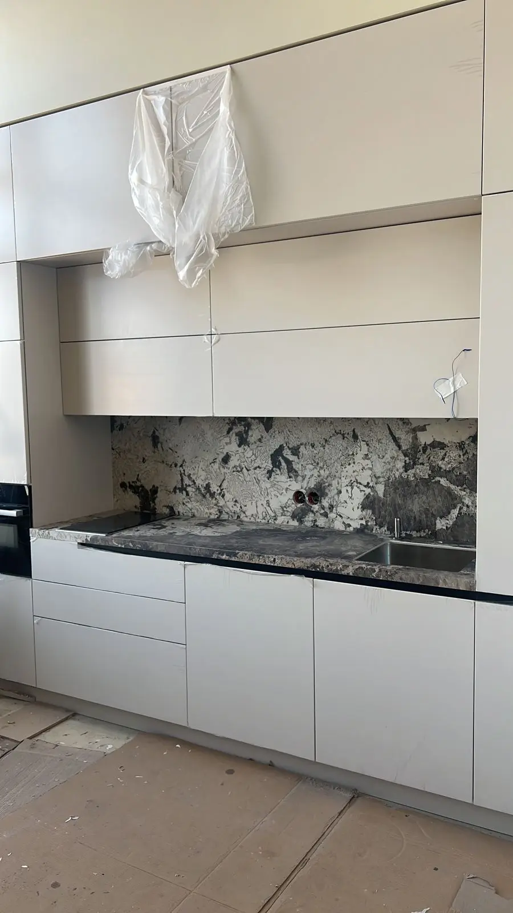

РЕЗКА КЕРАМОГРАНИТА
Предлагаем Вам услуги по резке керамогранита – идеального материала для отделки кухонь, ванных комнат, полов, стен и других поверхностей в интерьере. Резка керамогранита – это процесс высокоточного пореза крупноформатной плитки из искусственного камня, который дает возможность создавать различные формы и размеры элементов для дизайнерских решений. Наша команда профессионалов обладает богатым опытом и высоким уровнем квалификации в области резки керамогранита. Мы используем современное оборудование и инструменты, которые позволяют осуществлять точные и аккуратные порезы без каких-либо повреждений материала. При обращении к нам за услугами резки керамогранита, Вы можете быть уверены в получении качественного и профессионального результата. Мы гарантируем четкое соблюдение всех требований и пожеланий заказчика, а также точное выполнение всех замеров и расчетов. Мы предлагаем широкий спектр услуг по резке керамогранита, включая создание столешниц, раковин, подоконников, плинтусов, плитки для пола и стен, а также других элементов декора. Мы можем порезать керамогранит в различные формы и размеры, а также осуществить фаскировку краев для идеального завершения. Заказывая услуги по резке керамогранита у нас, Вы получаете не только качественную работу, но и индивидуальный подход к каждому проекту, а также оперативное выполнение всех работ в удобное для Вас время. Обращайтесь к нам, и мы с удовольствием поможем Вам воплотить в жизнь ваши идеи и желания по облицовке и декорированию интерьера с использованием керамогранита.


ОБЛИЦОВКА ФАСАДОВ МЕБЕЛИ
- Облицовка фасадов мебели из керамогранита представляет собой инновационное решение для обновления и улучшения внешнего вида вашей мебели. Керамогранит — это высококачественный материал, получаемый путем обжига смеси керамики и гранита, что делает его прочным, долговечным и устойчивым к воздействию влаги, температурных изменений и химических веществ.
- Облицовка фасадов мебели из керамогранита предлагает широкие возможности для дизайна интерьера. Вы сможете подобрать подходящий цвет, текстуру и оттенок керамогранита, который органично впишется в любой стиль помещения. Благодаря разнообразию фактур и узоров, вы сможете создать уникальный и оригинальный облик вашей мебели.
- Этот материал легок в уходе и не требует специального обслуживания. Просто достаточно протереть его влажной тряпкой для очистки. Керамогранит не теряет своего первоначального вида со временем, что гарантирует долговечность и сохранение красоты вашей мебели.
- Облицовка фасадов мебели из керамогранита это не только стильное решение, но и практичное, обеспечивающее долговечность и удобство использования мебельных поверхностей. Покупка этого товара обеспечит вашей мебели изысканный внешний вид, прочность и стойкость к различным внешним воздействиям.